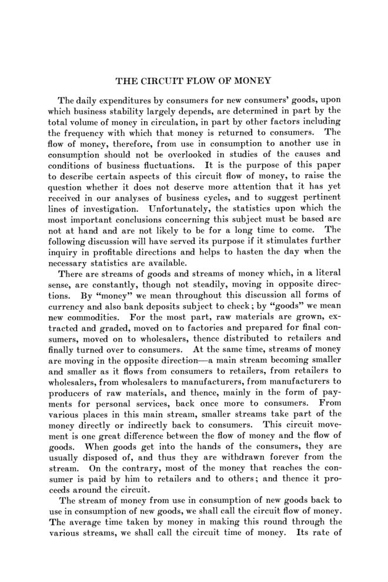

Foster e o caminho do dinheiro de volta ao consumidor
Leitura: 8 min
William T. Foster define a velocidade de circuito do dinheiro, de um gasto em bens de consumo novos a outro, e propõe estudá-la como causa das oscilações dos negócios.


Um par de sapatos comprado numa loja põe em movimento uma cadeia de pagamentos. Parte do dinheiro vai ao atacadista, parte ao fabricante, parte ao curtidor, parte ao criador do gado, parte ao fabricante de máquinas agrícolas, parte aos mecânicos da fábrica, e assim volta ao bolso de algum consumidor. O que o lojista paga na semana aos seus empregados faz o percurso depressa; o que o fabricante guarda em caixa como lucro não distribuído pode demorar muito. É com esse exemplo que William T. Foster, na American Economic Review de setembro de 1922, apresenta o que chama de fluxo de circuito do dinheiro.
O objetivo declarado é modesto: descrever esse fluxo, perguntar se ele não merece mais atenção na análise dos ciclos e sugerir linhas de pesquisa, já que as estatísticas necessárias não existem.
O que é a velocidade de circuito?
Por dinheiro, Foster entende todas as formas de moeda corrente e os depósitos bancários movimentáveis por cheque; por bens, as mercadorias novas. Bens e dinheiro correm em sentidos opostos. As matérias-primas vão às fábricas, aos atacadistas, aos varejistas e aos consumidores; o dinheiro faz o caminho inverso, numa corrente que diminui a cada etapa e volta aos consumidores sobretudo como pagamento por serviços pessoais. A diferença essencial é que os bens, ao chegar ao consumidor, em geral saem da corrente; o dinheiro continua.
O autor chama de fluxo de circuito o caminho do dinheiro de um uso no consumo de bens novos a outro uso no consumo de bens novos. O tempo médio desse percurso é o tempo de circuito; sua frequência, a velocidade de circuito, que é o inverso do tempo. Se a velocidade de circuito for de duas vezes por ano, o tempo de circuito será de meio ano. Não se trata da velocidade da moeda dos economistas, que mede quantas vezes o dinheiro é usado para qualquer fim.
Por que separar as duas? Se o volume de bens de consumo novos mantivesse uma proporção fixa com o total de bens em circulação, a velocidade de circuito acompanharia a velocidade geral e não haveria interesse especial nela. Toda a discussão de Foster supõe o contrário: que os períodos de grande perturbação dos negócios rompem as proporções vigentes nos tempos de estabilidade. Por isso, para alguns fins, ele prefere à equação de trocas usual uma versão em que entram a velocidade de circuito e o volume de bens de consumo novos vendidos aos consumidores.
O dinheiro pode trabalhar mais depressa para fazer os tecidos de lã passarem por mais mãos a caminho das alfaiatarias, sem que mais roupas saiam das lojas. E, se as pessoas gastarem menos em bens novos e mais em outras transações, a velocidade de circuito cai mesmo com quantidade e velocidade geral constantes.
Como o diagrama representa o fluxo?
O artigo traz um diagrama de reservatórios e canos, semelhante a um desenhado por M. C. Rorty. No alto, um reservatório duplo representa o fundo dos consumidores: de um lado a renda, quase toda gasta em consumo; do outro, o dinheiro da venda de imóveis e títulos, quase todo reinvestido. Os canos que ligam as duas partes estão sempre parcialmente entupidos: não se sabe quanto do fundo será gasto em consumo num dado período.
Na imagem da água, parte do reservatório move turbinas e irriga campos; parte fica congelada, parada em bacias mortas ou evapora. Nada disso perturba a produção se a vazão útil for constante. Com o dinheiro, diz Foster, é igual: não importa quanto está entesourado, desde que esse volume e o de bens fiquem estáveis. Quando dinheiro ocioso volta a trabalhar, ou dinheiro ativo se retira, muda a velocidade de circuito, e o efeito depende do estado dos negócios.
“Só as mudanças contam.” (“Only changes count.”)
Quanto tempo leva o circuito?
O autor arrisca uma conta para 1909, a partir da estimativa de Irving Fisher para o volume e a velocidade da moeda e da estimativa de renda do National Bureau. Se as transações em dinheiro somaram 400 bilhões de dólares e havia 8,68 bilhões em circulação, a velocidade média foi de cerca de 46. Se os consumidores gastaram 20 bilhões em bens novos, o tempo de circuito foi de 0,434 ano, ou 158,4 dias, e a velocidade de circuito, de cerca de 2,3.
Isso significaria que, para cada dólar gasto por um consumidor em bens de consumo novos, cerca de dezenove eram usados em outras transações. Cada dólar seria usado mais ou menos a cada oito dias para algum fim, mas só uma vez em 158 dias para levar bens novos às mãos dos consumidores. Foster insiste que há adivinhação demais nesses números e que eles servem só de ilustração; se a rotação dos depósitos for de cerca de 25 vezes por ano, como estima o Federal Reserve Bank de Nova York, as velocidades do exemplo estariam provavelmente longe do certo.
O que falta ao diagrama?
O próprio autor aponta duas omissões. A primeira são os bancos, pelos quais passa quase todo o dinheiro a caminho de um consumidor a outro. Quando um agricultor que espera a colheita toma dez mil dólares emprestados, o banco aumenta seus depósitos nesse valor, menos o desconto, e a moeda em circulação cresce; quando ele vende o trigo e quita o empréstimo, a moeda diminui na mesma medida. Em certo sentido, escreve Foster, a maior parte do dinheiro é criada e extinta nos bancos, e um novo empréstimo exige um novo ato conjunto do banco e de um tomador. A segunda omissão é o governo, que pode cunhar ou imprimir moeda quando gasta mais do que arrecada.
Em seguida, o autor lista onze condições que, com a moeda total constante e sem efeitos compensatórios, aceleram o circuito: aumento do total pago em salários, porque assalariados gastam maior parte do que recebem; redução de impostos; expectativa de alta de preços; expectativa de salários e lucros maiores; poupança menor; mais empréstimos ao consumo; uso maior de cheques; dias de pagamento mais frequentes; bens passando por menos mãos, como na integração vertical; menos dinheiro empregado em transferir imóveis, ações e títulos; e menos lucros não distribuídos mantidos em dinheiro. Nas condições opostas, o circuito se retarda. As três últimas, diz, merecem estudo particular.
Uma conclusão, diz Foster, não precisa esperar a pesquisa: os fatores variam de forma tão independente que praticamente não há chance de se equilibrarem, e o tempo de circuito muda o tempo todo.
“Cada dólar gasto pelos consumidores veio de algum lugar, foi para algum lugar.” (“Every dollar spent by consumers came from somewhere, went somewhere”)
Que conclusão o autor tira da depressão de 1921?
O fecho parte da surpresa geral com a sustentação das vendas no varejo na depressão de 1921, depois da queda dos mercados atacadistas. Para Foster, nada de mágico aconteceu: os registros existentes, bem analisados, explicariam essa persistência da demanda. E, se se conhecesse o fluxo de circuito dos ciclos anteriores, talvez não tivessem ocorrido nem a expansão extrema de 1919 nem a contração seguinte, cujas causas principais ele considera monetárias e sujeitas ao controle humano. O artigo é um capítulo do livro Money in the World's Work, então no prelo.
Na minha leitura
Na minha leitura, o artigo desloca a atenção da quantidade de moeda para o caminho que ela percorre. A velocidade geral da equação de trocas mistura compras de bens novos com transações financeiras e intermediárias; Foster isola a parte do gasto que leva bens ao consumidor final e argumenta que é ela que interessa ao ciclo. A ideia de que um fluxo de renda pode desacelerar sem que a quantidade de moeda mude é o núcleo do argumento.
O texto também deixa claras as exigências de informação do programa: medir o tempo de circuito exige saber quanto da renda vai a bens novos e quanto fica parado, e o próprio autor chama sua estimativa de ilustração.
Glossário
- Velocidade da moeda
- número de vezes que uma unidade de moeda é usada em transações num período.
- Equação de trocas
- identidade em que a moeda multiplicada por sua velocidade iguala o valor das transações.
- Fundo dos consumidores
- no diagrama de Foster, o dinheiro em mãos de indivíduos disponível para gasto em consumo.
- Lucros não distribuídos
- parte do lucro que a empresa retém em vez de pagar aos sócios.
- Integração vertical
- reunião, numa mesma empresa, de etapas sucessivas da produção e da distribuição.
Fontes
- The Circuit Flow of Money — William T. Foster (pp. 460–473). JSTOR · Internet Archive (PDF)
- Edição completa, com os demais artigos: Nº 178 do Arquivo.
Documento em domínio público (EUA, publicado antes de 1931), via JSTOR Early Journal Content e Internet Archive. Resumo e comentário do autor deste site, sem afiliação com a American Economic Association. Encontrou um erro? Escreva: a correção é publicada no próprio texto, com data.
← Taylor e a Rússia que o mundo perdeu como compradora ↑ Nº 178 · Adams, o crédito, a Rússia que compra e o circuito do dinheiro